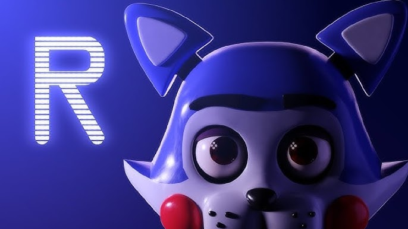

*Five Nights at Candy's* é um fan game criado por *Subliminal Studios* que apresenta uma nova linha de animatrônicos, incluindo Candy, o protagonista da história. O jogo mantém as mecânicas clássicas de FNaF, mas com algumas mudanças de perspectiva e novo enredo.
Como nos jogos originais, você deve monitorar as câmeras e gerenciar as portas e luzes do local, enquanto enfrenta animatrônicos que estão em constante movimento. A tensão aumenta conforme o tempo passa.